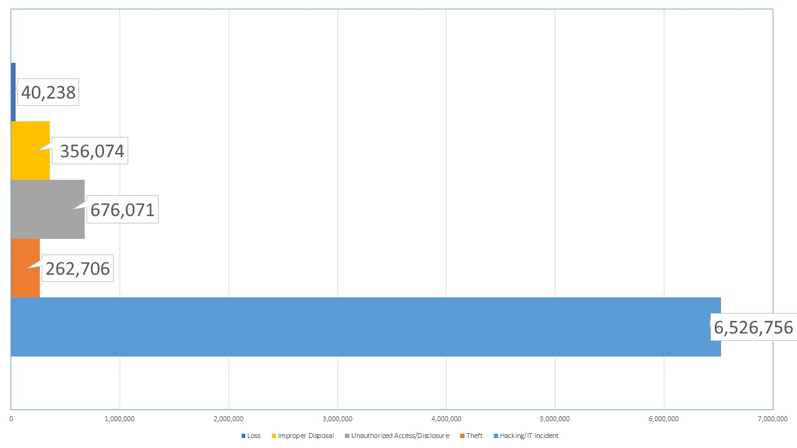
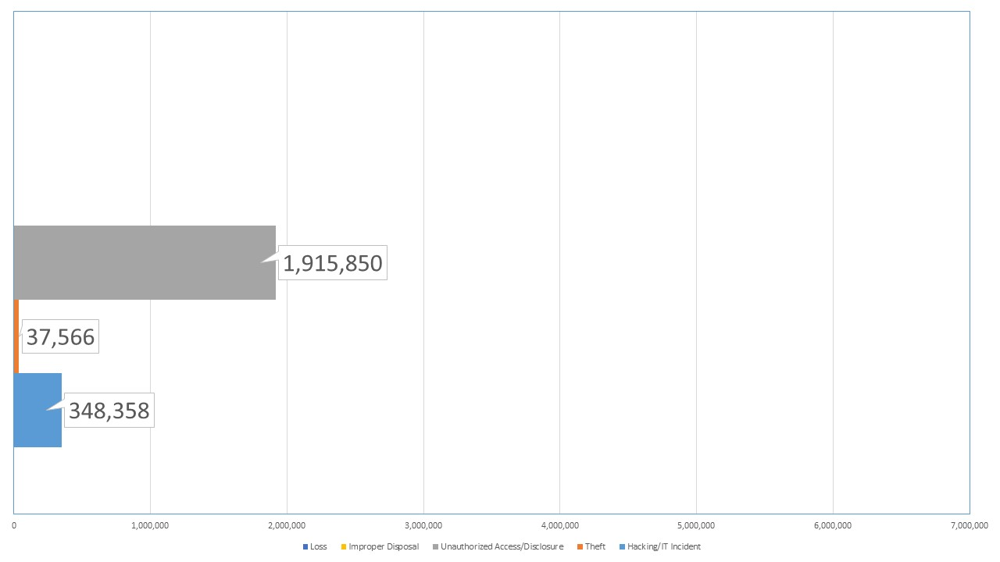
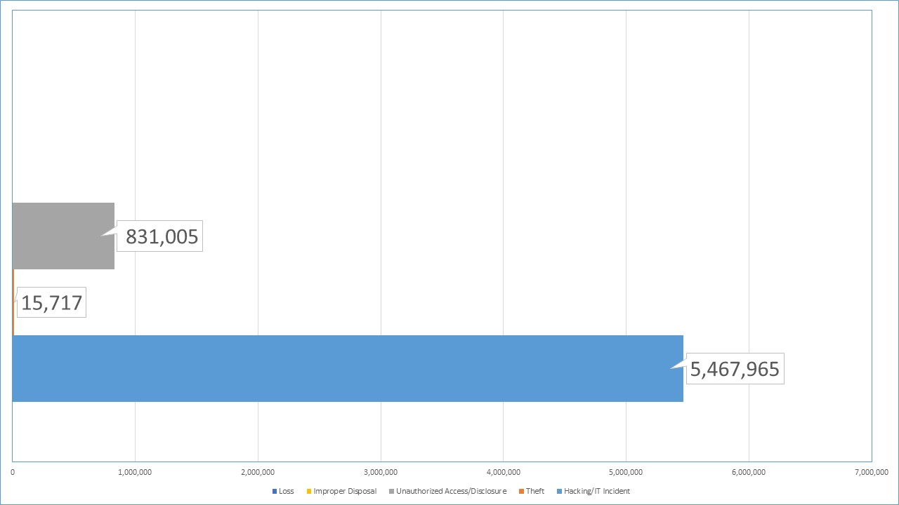

What information security data breaches have been in the news lately?
To date the top five data breaches of 2019 health care data have been:
| Name of Covered Entity | State | Covered Entity Type | Individuals Affected | Breach Submission Date | Type of Breach | Location of Breached Information |
|---|---|---|---|---|---|---|
| UW Medicine | WA | Healthcare Provider | 973,024 | 02/20/2019 | Hacking/IT Incident | Network Server |
| Columbia Surgical Specialist of Spokane | WA | Healthcare Provider | 400,000 | 02/18/2019 | Hacking/IT Incident | Network Server |
| UConn Health | CT | Healthcare Provider | 326,629 | 02/21/2019 | Hacking/IT Incident | |
| Navicent Health, Inc. | GA | Healthcare Provider | 278,016 | 03/22/2019 | Hacking/IT Incident | |
| ZOLL Services LLC | PA | Healthcare Provider | 277,319 | 03/18/2019 | Hacking/IT Incident | Network Server |
On patient health data reported breaches, what were the causes of the breaches?
HIPAA covered entities which fall victim to data breaches, may be indicated on the OCR data breach portal. The OCR categorizes
breaches into five main categories: Hacking/IT incident, Improper Disposal, Loss, Theft, and Unauthorized Access/Disclosure. The
graph shows the proportion at which this standard incidents occurs.
HIPAA covered entities and their business associates are the main sources for data breaches. Typically, OCR categories sources of data breaches as Healthcare Provider, Health Plan, and Business Associate. This graph reports the proportion of breaches by their source.
| Source of cause across covered entities | Breach proportion by covered entites |
|---|---|
|
|
| Healthcare Provider Breach Sources | Health Plan Breach Sources | Business Associate Breach Sources |
|---|---|---|
|

|

|

|
On patient health data reported breaches, were proper business associate agreements in place?

HIPAA covered entities are required to put in place a Business Associates agreement when business associates obtain the protected data from covered entities. The Office of Civil Rights (OCR) maintains a portal of breaches under investigation. Their data shows how many breaches occurred by state with and without a proper Business Associates agreement.
What is the anatomy of a data breach?

This chart reports on the topic OCR reported breaches and what the anatomy of the breach looks like.
Conclusion
Discussion of the results and their implications
Breaches occur with higher proportions in Hacking and IT incidents, as reported by the OCR.
Breaches occur with higher proportions in Healthcare Provider sources, as reported by the OCR.
Breaches occur across the country without proper Business Associate agreements in place, as reported by the OCR.